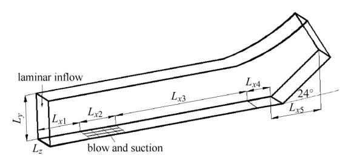
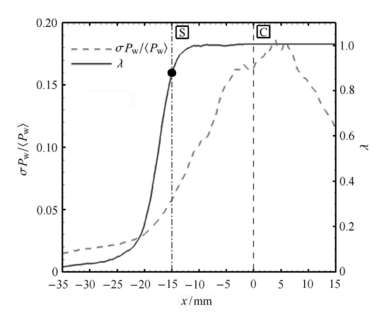
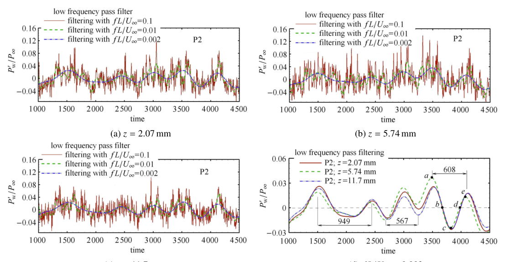
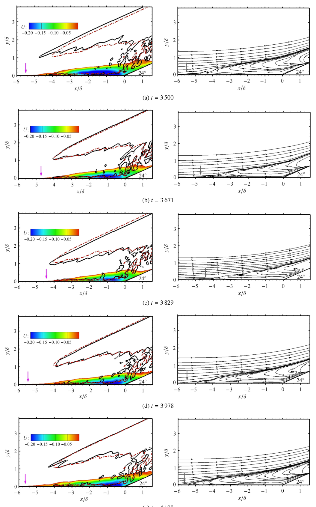

01中文摘要
针对马赫数2.9、24°压缩拐角内激波与转捩边界层干扰，采用直接数值模拟研究分离激波的非定常运动。在拐角上游平板特定流向位置施加吹吸扰动，使进入拐角的边界层处于转捩初期。分析表明，分离激波仍具有强间歇性和低频振荡，时间尺度约为上游无干扰区脉动特征尺度的10倍；分离泡展向三维结构对低频振荡特征无实质影响；低通滤波结果显示低频振荡主要源于拐角干扰区下游，并与分离泡的收缩/膨胀运动相关。
原始摘要（英文/原文）
激波与边界层干扰的非定常问题是高速飞行器气动设计中基础研究内容之一.以往研究主要针对层流和湍流干扰,在分离激波低频振荡及其内在机理方面存在着上游机制和下游机制两类截然不同的理论解释.分析激波与转捩边界层干扰下非定常运动现象有助于进一步加深理解边界层状态以及分离泡结构对低频振荡特性的影响规律,为揭示其产生机理指出新的方向.采用直接数值模拟方法对来流马赫数2.9,24?压缩拐角内激波与转捩边界层干扰下激波的非定常运动特性进行了数值分析.通过在拐角上游平板特定的流向位置添加吹吸扰动激发流动转捩,使得进入拐角的边界层处于转捩初期阶段.在验证了计算程序可靠性的基础上,详细分析了转捩干扰下激波运动的间歇性和振荡特征,着重研究了分离泡展向三维结构对激波振荡特性的影响规律,最后还初步探索了转捩干扰下激波低频振荡产生的物理机制.研究结果表明:分离激波的非定常运动仍存在强间歇性和低频振荡特征,其时间尺度约为上游无干扰区内脉动信号特征尺度的10倍量级;分离泡展向三维结构不会对分离激波的低频振荡特征产生实质影响.依据瞬态脉动流场的低通滤波结果,转捩干扰下激波低频振荡的诱因来源于拐角干扰区下游,与流场中分离泡的收缩/膨胀运动存在一定的关联.
02阅读说明
数值模拟研究（直接数值模拟，DNS）。材料为《力学学报》2017 年 49 卷 1 期第 93–104 页全文，bundle 12 页完整、无截断；PDF 双栏文本层在部分段落有交错，但正文、图注、公式均可读。图件清单给出 13 张候选图，本文选用其中 4 张；未回读原 PDF（公式仅为判据定义，bundle 已足够）。信息完整度较高：几何、网格、来流条件、采样与统计参数齐全，但边界层厚度/动量厚度只写“与 Wu 等和 Bookey 等接近，详见文献[27]”，未给具体数值；总温总压、来流静压、湍流度/噪声未提及。 文章类型：期刊
03一句话核心与三句话摘要
M∞2.9、24°压缩拐角 DNS 显示，转捩边界层干扰下分离激波仍强间歇低频振荡，与下游分离泡收缩/膨胀相关。
- 以往激波/边界层干扰非定常研究多集中于层流或充分发展湍流边界层，转捩干扰下分离激波的低频振荡特性及其属于上游机制还是下游机制尚缺证据。 AI概括
- 作者对 M∞=2.9、24°压缩拐角进行 DNS，在拐角上游平板用多频正弦吹吸扰动（A=0.2，β=0.1）激发转捩，使进入拐角的边界层处于转捩初期，并用物面压力谱、加权功率谱云图和低通滤波瞬态流场分析激波运动。 AI概括
- 结果表明分离激波仍具强间歇性（λ≈0.87）和低频振荡（峰值约 0.0012U∞/δ，时间尺度约为上游脉动的 10 倍），分离泡展向三维结构无实质影响，低频振荡与下游分离泡的收缩/膨胀相关。 原文明确
04核心内容清单
| 要点 | 类型 | 重要性 | 原文依据 | 属性 |
|---|---|---|---|---|
| 研究缺口：已有低频振荡研究集中在层流或充分发展湍流干扰，转捩干扰下分离激波运动特性研究较少，且低频机制存在上游/下游两派对立解释。 | 研究背景与缺口 | A | p.94–95 引言 | 原文明确 |
| 计算工况为 M∞=2.9、24°压缩拐角，单位长度雷诺数 5 581.4 mm⁻¹，来流静温 108.1 K，等温壁 307 K，边界层为吹吸扰动激发的转捩初期状态。 | 工况 | B | p.95 第1节 | 原文明确 |
| 数值方法为三维可压缩 N-S 方程，WENO+Steger–Warming 无黏通量、八阶中心差分黏性项、三阶 Runge–Kutta 时间推进；网格 1440×160×140，Δx+<4.5、Δy+<0.5、Δz+<5.1。 | 数值方法 | B | p.95 | 原文明确 |
| 转捩由上游平板多频正弦吹吸扰动触发，A=0.2、β=0.1，扰动带长 20 mm；五个频段位于压力谱高频区，不直接影响下游低频脉动。 | 转捩激发 | A | p.95、p.96 图3(b) 讨论 | 原文明确 |
| 程序验证：湍流干扰工况的时均物面压力与 Wu 等 DNS 基本重合，处于 Bookey 等实验 5% 误差带内，分离/再附点位置吻合。 | 验证 | A | p.96、图2 | 原文明确 |
| 转捩干扰下激波运动仍强间歇：时均分离起始点 x=−15 mm 处 λ≈0.87，接近湍流干扰的 0.88。 | 间歇性 | A | p.98、图8 | 原文明确 |
| 分离区压力脉动峰值频率约 0.0012U∞/δ，比上游无干扰区峰值低约一个量级；低频振荡时间尺度约为上游脉动的 10 倍。 | 低频特征 | A | p.93 摘要、p.99 图9 | 原文明确 |
| 与湍流干扰不同，转捩干扰下压力脉动均方差峰值出现在拐角下游再附区，而非分离起始点附近。 | 统计分布 | A | p.98、图8 | 原文明确 |
| 两条展向监测带的低频间歇区均位于 −15 mm<x<−10 mm，尽管上游频段分布不同；分离泡的展向三维结构不改变低频振荡特性。 | 三维性影响 | A | p.99–100、图10 | 原文明确 |
| 低通滤波（fcut=0.002）后，三条展向线的低频信号吻合，1000–4500 内出现 567、608、949 三个振荡周期。 | 滤波结果 | A | p.100–101、图11 | 原文明确 |
| 在一个 608 周期内，分离泡最大时激波位于平均位置上游，分离泡最小时激波位于下游，二者反相演化。 | 机制证据 | A | p.101–102、图13 | 原文明确 |
| 作者据此认为低频振荡诱因来自拐角干扰区下游，与分离泡收缩/膨胀相关，把下游机制推广到转捩干扰；但这是相关性证据，未建立定量因果模型。 | 结论与局限 | B | p.101–103、结论(3) | AI概括 |
05引言：研究问题与领域缺口
激波/边界层干扰广泛存在于高速飞行器内外流中，压缩拐角是典型构型（p.93–94）。作者指出，分离激波振荡包含两个时间尺度：高频约为湍流边界层扰动 O(δ/U)，低频约为其 10–100 倍；高频机制（拟序结构与激波相互作用）认识较一致，低频机制仍有“上游机制”和“下游机制”两类截然不同的解释（p.94）。上游机制诉诸来流湍流边界层中的猝发、脉动压力、边界层厚/薄运动、脉动速度、拟序结构群（超级结构）和高低速条带；下游机制诉诸再附点脉动、类似凹坑的共振、分离泡全局不稳定模态、剪切层卷吸/拍打以及分离泡舒张/收缩（p.94）。已有 DNS/LES 工作（Wu 等、Priebe 等、Grilli 等、Piponniau 等）多针对湍流干扰，层流干扰也有计算，但转捩干扰下分离激波运动的研究“还较为缺乏”（p.94–95）。作者的目标是：在验证程序可靠性的基础上，分析转捩干扰下激波运动的间歇性与低频振荡特征，考察分离泡展向三维结构的影响，并初步探索低频振荡的物理机制（p.93、p.95）。选取的计算参数与 Bookey 等实验和 Wu 等 DNS 一致，以便比较（p.95）。
06流动条件与几何构型
| 项目 | 数值/描述 | 依据 | 备注 |
|---|---|---|---|
| 来流马赫数 M∞ | 2.9 | p.95 第1节；摘要 p.93 | 全文唯一来流马赫数 |
| 单位长度雷诺数 | 5 581.4 mm⁻¹ | p.95 | 以 mm 为长度单位 |
| 来流静温 | 108.1 K | p.95 | |
| 壁面温度与热条件 | 307 K，等温壁、无滑移 | p.95 | |
| 来流总温、总压、静压 | 文中未提及 | 全文 | |
| 压缩拐角角度 | 24° | p.93、p.95、图1 | |
| 计算域（流向） | Lx1=30 mm，Lx2=20 mm，Lx3=65 mm（转捩工况）；角部 Lx4=35 mm，斜面 Lx5=51.5 mm | p.95、图1 | 湍流验证工况仅 Lx3=250 mm 不同 |
| 计算域（法向/展向） | Ly=35 mm，Lz=14 mm | p.95 | |
| 网格 | 1440×160×140（流向×法向×展向） | p.95 | |
| 壁面网格尺度 | 以 x=−35 mm 处壁面量度量：Δx+<4.5，Δy+<0.5，Δz+<5.1 | p.95 | |
| 入口条件 | 距平板前缘 200 mm 处的层流解 | p.95 | |
| 边界条件 | 出口超声速无反射；物面无滑移等温；上边界简单无反射；展向周期 | p.95 | |
| 边界层状态 | 拐角入口为转捩初期边界层；验证工况为充分发展湍流边界层 | p.93 摘要、p.95–96 | 边界层厚度、动量厚度数值文中未提及，仅称与 Wu 等/Bookey 等接近，详见文献[27] |
| 转捩激发方式 | 上游平板多频正弦吹吸扰动，幅值 A=0.2，频率 β=0.1，扰动带长 Lx2=20 mm | p.95、图1 | 与文献[21,27]相同 |
| 湍流验证工况采样 | z=7.0 mm 中心线，−5.4≤x/δ≤2 内 120 点，每 0.06δ/U∞ 取样，总长约 600δ/U∞ | p.96 | |
| 转捩工况采样 | z=2.07、5.74、11.7 mm 三条带，各 120 点，−35 mm<x<15 mm；从 t=1000 起每 0.4 取样，总长 3500 | p.97–98 | 无量纲时间以长度 mm 为特征长度 |
| 攻角/偏转角 | 不适用（压缩拐角构型，无攻角） | p.95、图1 | |
| 来流湍流度/风洞噪声 | 文中未提及（DNS，无风洞背景噪声） | 全文 |
07核心现象与关键参数
| 参数 | 定义 | 数值 | 关系/说明 | 依据 |
|---|---|---|---|---|
| 低频峰值频率 | 分离点/分离泡内物面压力脉动 PSD 的峰值频率，以 U∞/δ 无量纲化 | 约 0.0012（P2、P3） | 上游无干扰区峰值约 0.01–0.1；湍流工况分离区约 0.008 | p.99、图9；p.96、图3 |
| 低频振荡周期 | 低通滤波后压力信号在一个取样段内的振荡周期 | 567、608、949（无量纲时间） | 对应频率量级 0.001–0.002 | p.100–101、图11(d) |
| 间歇因子 λ | λ=time[Pw>(⟨PwI⟩+3σ(PwI))]/totaltime，PwI 取 x=−35 mm 上游无干扰区压力 | 0.87（x=−15 mm，转捩）；0.88（湍流对比） | 表征激波运动间歇程度 | p.98、图8；公式见 p.98 |
| 压力脉动均方差峰值位置 | 物面压力脉动均方差沿流向的极大值位置 | 转捩工况在拐角下游再附区；湍流工况在分离区起始点附近 | 两者分布规律差异较大 | p.98、图8 |
| 低频间歇区 | WPSD 云图中低频峰值占优的流向区间 | −15 mm<x<−10 mm（两条展向带） | 湍流工况为 −3.4≤x/δ≤−1.6 | p.99–100、图10；p.97、图4 |
| 时间尺度比 | 低频振荡时间尺度与上游无干扰区脉动特征尺度之比 | 约 10 倍量级 | 与湍流干扰的 10–100 倍同量级 | p.93 摘要、p.94 |
| 分离泡尺度 | 低通滤波流场中分离区的流向长度与法向高度 | 文中未给出具体数值（图13 仅作定性比较） | 与激波瞬时位置反相变化 | p.101–102、图13 |
| 转捩工况压力测点 | 三条展向监测带上的物面压力监测点 | 3×120 点；z=2.07、5.74、11.7 mm | P1–P4 为典型特征点 | p.97、图7 |
| 上游扰动频率 | 多频正弦吹吸扰动的无量纲频率 β | 0.1（五个频段） | 高于观测低频 0.001–0.01，故不是低频来源 | p.95、p.99 |
| 无量纲采样总长 | 转捩工况压力/流场取样时间跨度 | 3500（从 t=1000 起至 4500） | 约 5–6 个低频周期 | p.98、p.100–101 |
08方法与数据
控制方程为一般曲线坐标系下无量纲化的三维可压缩 Navier–Stokes 方程，用无穷远来流参数无量纲化，长度以 mm 为单位（p.95）。无黏项采用 Martin 等优化的 WENO 格式与 Steger–Warming 流通量分裂，黏性项用八阶中心差分，时间推进为三阶 Runge–Kutta（p.95）。计算模型为含周期性吹吸扰动带的上游平板与 24°压缩拐角，坐标原点取拐点，x/y/z 分别为流向/法向/展向（p.95，图1）。计算域：Lx1=30 mm（层流入口剖面至扰动带起点）、Lx2=20 mm（扰动带长度）、Lx3=65 mm（扰动带终点至拐角入口）、Lx4=35 mm（角部区域）、Lx5=51.5 mm（斜面区域）、Ly=35 mm、Lz=14 mm（p.95）。网格 1440×160×140，角部 −35 mm≤x≤35 mm 内流向均匀加密，法向壁面指数加密，展向均匀；以 x=−35 mm 处壁面量度量，Δx+<4.5、Δy+<0.5、Δz+<5.1（p.95）。来流 M∞=2.9，单位长度雷诺数 5 581.4 mm⁻¹，来流静温 108.1 K，壁温 307 K；入口取距平板前缘 200 mm 处的层流解，出口为超声速无反射边界，物面为无滑移等温壁，上边界为简单无反射边界，展向周期（p.95）。上游平板扰动带内为多频正弦吹吸扰动，幅值 A=0.2、频率 β=0.1，与文献[21,27]相同（p.95）。为验证程序，先对相同来流条件下的湍流干扰工况做 DNS：Lx1、Lx2 相同，仅 Lx3=250 mm，吹吸频率与幅值相同，使拐角入口边界层参数接近 Wu 等 DNS 与 Bookey 等实验（p.95–96）。验证内容包括时空平均物面压力与摩阻系数分布、分离起始点与再附点位置，并与 Wu 等结果及 Bookey 等 5% 误差带比较（p.96，图2）。统计：湍流工况在 z=7.0 mm 展向中心线 −5.4≤x/δ≤2 内布置 120 个压力测点，每 0.06δ/U∞ 取样，总长约 600δ/U∞（p.96）；转捩工况在 z=2.07、5.74、11.7 mm 三条展向监测带各布置 120 点，流向 −35 mm<x<15 mm，从无量纲时间 1000（约 5 个流动通过时间）开始，每 0.4 取样，总长 3500（p.97–98）。分析方法包括瞬时压力功率谱密度（PSD）、沿流向的加权功率谱密度（WPSD）云图，以及截断频率 fcut=0.1、0.01、0.002 的频谱空间低通盒式滤波（p.98–100）。
| 项目 | 内容 | 依据 | 备注 |
|---|---|---|---|
| 控制方程 | 一般曲线坐标系下无量纲化三维可压缩 Navier–Stokes 方程；无穷远来流参数无量纲化，长度以 mm 为单位 | p.95 | DNS，无湍流模型 |
| 无黏通量格式 | Martin 等优化的 WENO 格式 + Steger–Warming 流通量分裂 | p.95 | |
| 黏性项离散 | 八阶中心差分 | p.95 | |
| 时间推进 | 三阶 Runge–Kutta | p.95 | |
| 网格 | 1440×160×140；角部 −35 mm≤x≤35 mm 流向均匀加密，法向壁面指数加密，展向均匀 | p.95 | Δx+<4.5、Δy+<0.5、Δz+<5.1 |
| 入口与边界条件 | x=200 mm 层流解入口；超声速无反射出口；无滑移等温壁；上边界简单无反射；展向周期 | p.95 | |
| 转捩激发 | 平板扰动带多频正弦吹吸，A=0.2、β=0.1，带长 20 mm | p.95 | 使拐角入口处于转捩初期 |
| 程序验证 | 相同来流下湍流干扰 DNS（Lx3=250 mm），对比 Wu 等 DNS 与 Bookey 等实验 5% 误差带 | p.95–96、图2 | 仅验证湍流工况，转捩工况无实验对照 |
| 压力采样 | 湍流：z=7.0 mm，120 点，Δt=0.06δ/U∞，600δ/U∞；转捩：3×120 点，Δt=0.4，总长 3500 | p.96–98 | |
| 谱分析 | 瞬时压力 PSD、沿流向 WPSD 云图；低通盒式滤波 fcut=0.1、0.01、0.002 | p.96–100 | 滤波器 G(f)=1（f≤fcut）、0（f>fcut） |
| 流场滤波分析 | 对 z=5.74 mm 流向–法向截面瞬时流场做同样低通滤波，追踪激波位置与分离泡尺度 | p.101、图12–13 | |
| 网格无关性/不确定度 | 文中未提及网格无关性研究；无实验不确定度（DNS） | 全文 |
09核心推导与公式
原文未给出从守恒律出发的完整解析推导；以下仅列出材料中可核对的定义或建模链，不补写教科书推导。
本文为 DNS 现象分析，未建立低频振荡的解析模型，也未给出公式推导。文中仅给出两个分析判据的定义：一是激波运动间歇因子 λ（p.98），二是频谱空间低通盒式滤波器 G(f)（p.100）；其余结论均由数值采样、PSD/WPSD 与滤波流场的定性/半定量比较得到。
关键假设
- 统计定常：转捩工况从无量纲时间 1000（约 5 个流动通过时间）开始取样，总长 3500，按时间平稳信号处理
- 间歇判据阈值取上游无干扰区瞬时压力均值加 3 倍均方差，并以 x=−35 mm 处压力为参考
- 低通滤波截断频率依次取 0.1、0.01、0.002，认为 fcut=0.002 时仅保留 0.0012 附近低频成分
- 物面压力信号可代表分离激波的非定常运动，分离激波位置用低通滤波后的压力梯度等值线表征
适用边界：不适用解析推导层面的适用边界。就分析而言：只计算一个马赫数、一个拐角角和一个固定转捩位置；统计时长仅覆盖约 3–4 个低频周期，频率分辨率有限；机制结论基于一条展向截面的滤波流场与激波位置/分离泡尺度的相关性，未给出因果性证明；转捩工况无实验验证。
10结果：主要发现与关键证据
验证：湍流干扰工况的时均物面压力与 Wu 等 DNS 基本重合，且落在 Bookey 等实验 5% 误差带内，分离起始点与再附点位置也吻合（p.96，图2）。频谱基线：湍流工况上游无干扰区 PSD 峰值在 (0.1–1.0)U∞/δ，分离点与分离泡内峰值约 0.008U∞/δ（Wu 等约 0.007）；WPSD 云图显示上游主频约 1.0U∞/δ，间歇区 −3.4≤x/δ≤−1.6 内峰值约 0.01U∞/δ，下游分离泡和再附区又回到高频（p.96–97，图3、图4）。转捩工况流场：瞬态密度梯度等值面显示激波在远离边界层处沿展向变化很小，但在转捩边界层外缘沿展向变化剧烈，角部强逆压梯度导致分离（p.97，图5）；时均流场中分离区存在两个尺度和方向不同的小分离泡，表明展向强三维结构（p.97，图6）。间歇性：z=5.74 mm 监测带上压力脉动均方差在拐角上游较小，进入分离区后急剧增强，峰值出现在拐角下游再附区，这与湍流干扰“峰值在分离起始点附近”不同；时均分离起始点 x=−15 mm 处间歇因子 λ≈0.87，与湍流干扰的 0.88 接近（p.98，图8）。低频特征：P1（上游无干扰区）峰值在中频段 0.01–0.1；P2、P3（分离区/分离泡内）峰值移到低频，约 0.0012，P2 次峰约 0.016，P3 次峰 0.006 和 0.009；P4（再附点下游）峰值回到中频约 0.032（p.99，图9）。低频振荡特征频率集中在 0.001–0.01，而上游吹吸扰动频率 β=0.1，说明下游低频脉动并非吹吸扰动引起（p.99）。WPSD 云图：两条展向监测带的低频间歇区均位于 −15 mm<x<−10 mm；上游区域 z=2.07 mm 以高频为主、z=5.74 mm 以中频为主，但低频振荡影响的流向区域差别较小，表明分离泡展向三维结构不会对低频振荡特性产生实质影响（p.99–100，图10）。低通滤波：fcut=0.002 时仅保留 0.0012 附近成分，三条展向线在 1000–4500 内均出现 3 个周期，分别为 567、608、949；以 608 周期标出 5 个时刻 3500、3671、3829、3978、4108（p.100–101，图11）。滤波流场：脉动压力峰值只出现在分离激波附近及其下游，上游转捩边界层中无明显低频压力成分（p.101，图12）；t=3500（波峰）时激波位于平均值上游、分离泡长度与高度最大；t=3829（波谷）时分离泡最小、激波位于平均值下游；3978 膨胀、4108 恢复，激波位置与分离泡尺度呈反相演化（p.101–102，图13）。
| 发现 | 证据 | 证据类型 | 强度 | 位置 | 属性 |
|---|---|---|---|---|---|
| 转捩干扰下分离激波的非定常运动仍具有强间歇性，时均分离起始点处 λ≈0.87，与湍流干扰的 0.88 接近。 | 图8 间歇因子沿流向分布；x=−15 mm 处 λ≈0.87；与湍流干扰 0.88 对比 | 定量统计 | 强 | p.98、图8 | 原文明确 |
| 分离区压力脉动以低频为主，峰值频率约 0.0012U∞/δ，比上游无干扰区低约一个量级，低频振荡时间尺度约为上游脉动的 10 倍。 | 图9 P2/P3 的 PSD；图10 WPSD 云图；摘要给出 10 倍量级 | 频谱分析 | 强 | p.93、p.99–100、图9–10 | 原文明确 |
| 低频间歇区位于 −15 mm<x<−10 mm；两条展向监测带的低频周期与影响区间基本一致，分离泡展向三维结构不改变低频振荡特性。 | 图10 两条 WPSD 云图；图11(d) 三条展向线滤波后低频曲线吻合 | 三维性检验 | 强 | p.99–101、图10–11 | 原文明确 |
| 与湍流干扰不同，转捩干扰下压力脉动均方差峰值出现在拐角下游再附区，而非分离起始点附近。 | 图8 均方差沿流向分布 | 统计分布对比 | 强 | p.98、图8 | 原文明确 |
| 低通滤波后，三条展向线在 1000–4500 内均出现 567、608、949 三个振荡周期；以 608 周期分析，激波位置与分离泡尺度反相演化。 | 图11(d) 标出的 5 个时刻 3500/3671/3829/3978/4108；图13(a)–(e) | 滤波流场演化 | 强 | p.100–102、图11、图13 | 原文明确 |
| 滤波后脉动压力峰值只出现在分离激波附近及其下游，上游转捩边界层中无明显低频压力信号，说明低频来源在下游。 | 图12 两个时刻的低通滤波脉动压力云图 | 流场证据 | 中 | p.101、图12 | 原文明确 |
| 程序在湍流干扰工况下与 Wu 等 DNS 及 Bookey 等实验吻合（压力在 5% 误差带内），为转捩工况结果提供可信度支撑。 | 图2 时均压力/摩阻分布与实验误差带、Wu 等曲线对比 | 验证 | 强 | p.96、图2 | 原文明确 |
11机制解释与论证链
作者的论证链是：① 低通滤波后的瞬态流场中，脉动压力峰值只出现在分离激波附近及其下游，上游转捩边界层没有明显低频压力成分（p.101，图12）；② 上游吹吸扰动频率 β=0.1 高于观测到的低频 0.001–0.01，故低频不是上游扰动直接传入（p.99）；③ 在 608 时间单位的周期内，分离泡尺度最大时激波位于平均位置上游，分离泡最小时激波位于下游，二者反相（p.101–102，图13）；④ 因此低频振荡的诱因来自拐角干扰区下游，与分离泡收缩/膨胀相关（p.101、p.103）。物理图像可概括为：下游分离泡的缓慢充放（收缩/膨胀）改变分离区对上游的位移效应，使分离激波前后移动；而展向三维结构只让激波面产生小尺度褶皱，不改变这一低频“呼吸”过程（p.100）。【AI概括，依据原文第3.4节与结论】
12讨论：结论、贡献与局限
作者把低频振荡归因于下游分离泡的收缩/膨胀：在一个 608 时间单位的周期内，分离泡尺度最大时分离激波最靠上游，分离泡最小时激波最靠下游（p.101–102，图13）。由于低通滤波后的上游转捩边界层中没有明显低频压力信号，且吹吸扰动频率 β=0.1 远高于观测到的 0.001–0.01，作者排除了上游扰动直接驱动的解释（p.99、p.101）。同时，三条展向监测带的时均分离点位置差别较大、分离泡有强三维结构，但低频间歇区位置和低频周期基本一致，故认为展向三维结构只造成激波面小尺度褶皱，不改变低频振荡本质（p.100）。这一结论支持并推广了 Wu 等、Priebe 等的下游机制：把适用范围从湍流干扰扩展到转捩初期干扰（p.103）。局限方面，作者只计算了单一马赫数、单一拐角角和一种转捩激发方式；转捩边界层由固定位置吹吸扰动强制产生，与实际风洞/飞行条件的自然转捩不完全等价；低频机制的证据是滤波流场中激波位置与分离泡尺度的相关性，尚未给出因果性的定量模型；统计时长 3500 内只分辨出约 3–4 个低频周期，频率分辨率有限；转捩工况无实验对照，验证仅针对湍流工况（p.96、p.100–103，AI 依据全文归纳）。
作者结论
作者给出三点结论（p.103）：(1) 转捩干扰下激波的非定常运动存在强间歇性，物面压力脉动均方差峰值出现在拐角干扰区下游；(2) 分离激波仍存在与湍流干扰类似的低频振荡，频率比上游无干扰区峰值低约一个量级，分离泡的展向三维结构不会对低频振荡产生实质影响；(3) 转捩干扰下激波低频振荡与下游分离泡的收缩–膨胀运动存在较强关联，数值结果支持和验证了湍流干扰低频振荡的下游机制，并将该理论适用范围推广到转捩干扰。
主要贡献
- 首次（据作者检索）对 M∞=2.9、24°压缩拐角下激波与转捩初期边界层干扰做 DNS，给出分离激波间歇性与低频振荡的定量特征。
- 用三条展向监测带系统检验分离泡三维结构对低频振荡的影响，给出“无实质影响”的证据。
- 把低通滤波方法用于转捩干扰的脉动压力场与瞬态流场，直接展示激波位置与分离泡收缩/膨胀的反相演化。
- 把下游机制从湍流干扰推广到转捩干扰，为低频振荡机理争论提供新的边界层状态证据。
局限与未解决问题
（1）仅一个来流马赫数（2.9）、一个拐角角（24°）和一种转捩激发方式，结论的普适性未验证；（2）转捩由固定位置、固定幅值/频率的吹吸扰动强制产生，转捩位置与自然转捩不同，可能影响分离泡结构；（3）转捩工况无实验对照，程序验证只覆盖湍流工况（p.96）；（4）统计时长 3500 仅覆盖约 3–4 个低频周期，低频峰值 0.0012 的频率分辨率有限；（5）滤波流场只取 z=5.74 mm 一个截面，机制判断未充分利用三维数据；（6）激波位置与分离泡尺度的反相只是相关性，作者未给出定量因果模型或能量传递分析；（7）作者未讨论网格无关性与数值耗散对低频信号的影响。
13对高速流动与工程的意义
在机理层面，本文把“分离激波低频振荡由下游分离泡收缩/膨胀驱动”的下游机制从湍流干扰扩展到转捩初期干扰，说明只要存在分离泡，边界层上游是层流、转捩还是湍流并不是低频振荡的必要条件；这对理解压缩拐角、进气道/隔离器等内流中的激波非定常运动有直接参考价值。在方法层面，展示了用长时程物面压力采样 + WPSD + 低通滤波流场来分离高频/低频成分、定位低频来源的完整流程，可复用于其他 SBLI 构型。工程上，若低频载荷主要受下游分离泡控制，则抑制分离泡的缓慢充放（而非仅控制上游来流脉动）可能更有效；这一控制含义是 AI 推断，原文未做控制研究。本文不涉及高超声速、真实气体、气动热或三维大分离，不能直接回答这些条件下的低频振荡问题。【AI概括】
14核心图件




15可引用原文素材
| 原文短句 | 可支持的观点 | 位置 | 使用建议 |
|---|---|---|---|
| “分离激波的非定常运动仍存在强间歇性和低频振荡特征” | 转捩干扰下仍保留间歇性与低频振荡两大特征 | p.93 摘要 | 作为本文核心结论的总括引用 |
| “其时间尺度约为上游无干扰区内脉动信号特征尺度的10 倍量级” | 低频时间尺度与上游湍流脉动的量级关系 | p.93 摘要 | 与湍流干扰 10–100 倍的文献值对比时引用 |
| “间歇因子λ 约为0.87” | 转捩干扰下激波运动强间歇的定量证据 | p.98、3.2 节 | 引用间歇性数值时使用，需同时给出 x=−15 mm 位置 |
| “压力脉动的均方差峰值出现在拐角下游的再附区” | 转捩干扰与湍流干扰统计分布的关键差异 | p.98、3.2 节 | 讨论边界层状态对压力脉动分布影响时引用 |
| “低频振荡的特征频率集中在0.001∼0.01 之间” | 低频峰值范围，且与吹吸扰动 β=0.1 明显分离 | p.99、3.3 节 | 排除上游扰动直接驱动时引用 |
| “不会对分离激波的低频振荡特性产生实质影响” | 分离泡展向三维结构不影响低频振荡 | p.100、3.3 节 | 讨论三维结构作用时引用，前文需补主语“分离泡的展向三维结构” |
| “主要因素也来自于拐角干扰区内的下游结构中” | 低频振荡诱因位于下游 | p.101、3.4 节 | 支持下游机制时引用 |
| “数值结果支持和验证了湍流干扰低频振荡的下游机制” | 把下游机制推广到转捩干扰 | p.103、结论(3) | 作为本文对机理争论的定位引用 |
16最终核验
| 核验项 | 结论 |
|---|---|
| 仅基于全文 | 是。全部内容来自 bundle 文本与图注，未检索外部文献、未引入教科书知识；因文中公式只是判据定义且文本清晰，未回读原 PDF。 |
| A 级要点有依据 | 是。A 级要点均给页码、节号、图号或公式位置；M∞=2.9、Re=5 581.4 mm⁻¹、Tw=307 K、λ≈0.87、0.0012、567/608/949 等数值均可在 p.93–103 或图8–13 查到。 |
| 属性标注 | 是。三句摘要、核心要点、发现均标【原文明确】/【AI概括】/【AI推断】；机制段与意义段整体标为 AI 概括，控制含义明示为 AI 推断。 |
| 覆盖范围 | IMRaD 四节、工况表（18 项，转捩与湍流验证两类分列）、关键参数（10 项）、方法（12 项）、推导（exists=false，含 4 条分析假设）、发现（7 条）、引文（8 条）、图件（4 张）、待确认问题（6 条）均已覆盖。 |
| 无编造 | 未编造页码、图号、公式或数据。文中未给的边界层厚度/动量厚度、总温总压、静压、湍流度均写“文中未提及”；分离泡具体尺度写“文中未给出具体数值”。 |
需回原文确认
- 拐角入口边界层厚度 δ 与动量厚度 θ 的具体值是多少？文中只称与 Wu 等/Bookey 等接近并指向文献[27]，无法据此换算 Re_δ 或 Re_θ。
- 吹吸扰动带五个频段的具体频率与幅值谱未列出，只给 A=0.2、β=0.1；扰动是否改变了分离泡的本征稳定性？
- 统计总长 3500 只覆盖约 3–4 个 0.0012 对应的周期（约 833），峰值频率与周期 567/608/949 的分辨精度如何？
- 转捩工况的“转捩初期”是否有定量判据（如间歇因子、形状因子或壁面摩阻）？文中未给出。
- z=2.07 mm 监测带的高频特征被归因于“计算域两侧发卡涡包”，这一解释的证据仅为频谱形态，是否做过流场结构识别？
- 低通滤波流场只分析 z=5.74 mm 一个截面，其他展向位置的激波–分离泡相位关系是否一致？
- 本文未做网格无关性检验，WENO 的数值耗散对 0.001 量级低频信号的影响有多大？
17关联文献
依据标签、板块、构型与作者脉络自动关联，可据此追踪同一问题的前序与后续工作。
18引用格式
选择期刊风格后复制；出处保留原刊名。BibTeX 可直接用于 LaTeX。
引用格式
童福林, 李新亮 & 唐志共 2017 激波与转捩边界层干扰非定常特性数值分析. 力学学报 49 (1), 93–104. https://kns.cnki.net/KCMS/detail/detail.aspx?dbcode=CJFQ&dbname=CJFDLAST2017&filename=LXXB201701011
PDF上传 PDF 并更新本页
本页缺少全文、摘要或图件时，可在浏览器本地补入 PDF。解析完全在本机完成，不上传网络；完成后会更新本页的 PDF 打开链接、原摘要、IMRaD 机器抽取、关键句与含图页面。复杂的公式语义与中文深度解读仍以原文和既有精读记录为准。